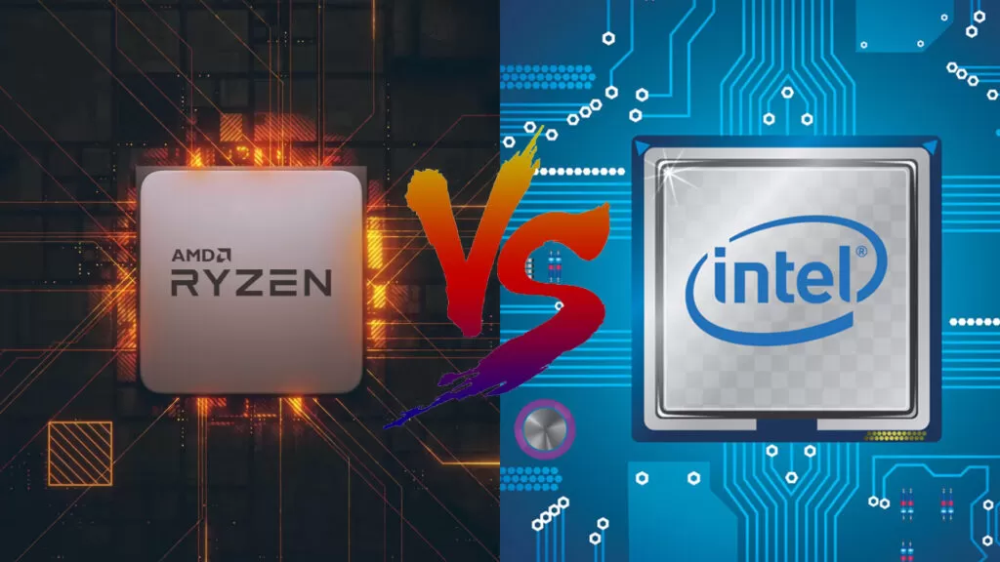

Processadores Intel vs. AMD: Qual Escolher?
A escolha entre processadores Intel e AMD é uma das decisões mais importantes na montagem ou atualização de um computador. Ambas as marcas oferecem excelentes opções, mas cada uma possui características que podem se adequar melhor a diferentes tipos de usuários e aplicações. Neste post, vamos explorar as principais diferenças, vantagens e desvantagens de cada uma.
1. Histórico e Visão Geral
Intel
A Intel tem dominado o mercado de processadores por muitos anos, conhecida pela sua confiabilidade e inovação contínua. A linha de processadores Intel inclui as séries Core i3, i5, i7 e i9, além das séries Xeon voltadas para servidores.
AMD
A AMD tem ganhado destaque nos últimos anos, especialmente com o lançamento da arquitetura Ryzen. Os processadores Ryzen são conhecidos por oferecer um excelente desempenho a um custo mais acessível. A linha Ryzen inclui as séries Ryzen 3, 5, 7 e 9, além dos processadores Threadripper para uso profissional intensivo.
2. Desempenho
Intel
- Desempenho Single-Core: Historicamente, a Intel tem tido vantagem em desempenho single-core, o que é importante para muitas aplicações e jogos.
- Turbo Boost: Tecnologia que permite aumentar a frequência do processador automaticamente quando necessário.
- Estabilidade e Compatibilidade: Intel é frequentemente elogiada pela sua estabilidade e compatibilidade com uma ampla gama de software e hardware.
AMD
- Desempenho Multi-Core: Os processadores AMD Ryzen são conhecidos por seu excelente desempenho multi-core, sendo ideais para multitarefas, renderização de vídeo e outras tarefas intensivas.
- Precision Boost: Tecnologia similar ao Turbo Boost da Intel, ajustando automaticamente a frequência do processador.
- Custo-Benefício: A AMD oferece um desempenho impressionante a preços mais acessíveis, tornando-se uma escolha atraente para muitos usuários.
3. Preço
Intel
Os processadores Intel tendem a ser mais caros, especialmente os modelos de alta performance como o Core i9. No entanto, eles também oferecem opções econômicas na série Core i3 e i5.
AMD
AMD geralmente oferece uma melhor relação custo-benefício, especialmente nas gamas médias e altas, como Ryzen 5 e Ryzen 7, que muitas vezes superam os concorrentes da Intel em termos de preço e desempenho multi-core.
4. Consumo de Energia e Calor
Intel
Os processadores Intel são conhecidos por seu baixo consumo de energia e eficiência térmica, o que pode ser uma vantagem em sistemas compactos e laptops.
AMD
Os processadores Ryzen da AMD tendem a consumir mais energia e gerar mais calor, especialmente os modelos de alta performance como Ryzen 9 e Threadripper. No entanto, com um bom sistema de refrigeração, isso pode ser gerenciado.
5. Gráficos Integrados
Intel
Muitos processadores Intel vêm com gráficos integrados (Intel UHD Graphics), o que pode ser suficiente para tarefas diárias e jogos leves sem a necessidade de uma placa de vídeo dedicada.
AMD
A AMD oferece processadores com gráficos integrados sob a linha Ryzen com gráficos Vega, que geralmente têm um desempenho superior aos gráficos integrados da Intel, sendo adequados para jogos mais exigentes e edição de vídeo.
6. Compatibilidade de Plataforma
Intel
A Intel costuma mudar os sockets com mais frequência, o que pode exigir uma atualização da placa-mãe ao trocar de processador.
AMD
A AMD é conhecida por manter a compatibilidade do socket AM4 por várias gerações de processadores Ryzen, facilitando as atualizações de CPU sem necessidade de trocar a placa-mãe.
7. Conclusão: Qual escolher?
Para Jogos
- Intel: Se você busca o máximo desempenho em jogos, especialmente em resoluções mais baixas (1080p), a Intel ainda pode ter uma leve vantagem devido ao seu desempenho single-core superior.
- AMD: No entanto, os processadores Ryzen 5000 e 7000 da AMD também oferecem excelente desempenho em jogos, muitas vezes a um preço mais competitivo.
Para Produtividade e Multitarefas
- AMD: Se você realiza muitas tarefas simultaneamente ou usa aplicações que aproveitam múltiplos núcleos (como edição de vídeo, renderização 3D, etc.), os processadores Ryzen da AMD são uma excelente escolha.
- Intel: Os processadores Intel de alto desempenho também são uma boa opção, mas geralmente a um custo mais alto.
Para Uso Geral e Orçamento
- AMD: Oferece excelente desempenho a preços acessíveis, sendo uma ótima escolha para a maioria dos usuários.
- Intel: Oferece opções econômicas, mas você pode obter mais núcleos e threads pelo mesmo preço com a AMD.
Considerações Finais
A escolha entre Intel e AMD dependerá das suas necessidades específicas e do seu orçamento. Ambas as marcas oferecem produtos de alta qualidade, e a decisão final deve considerar o uso pretendido do computador, seja para jogos, produtividade, ou uso geral.